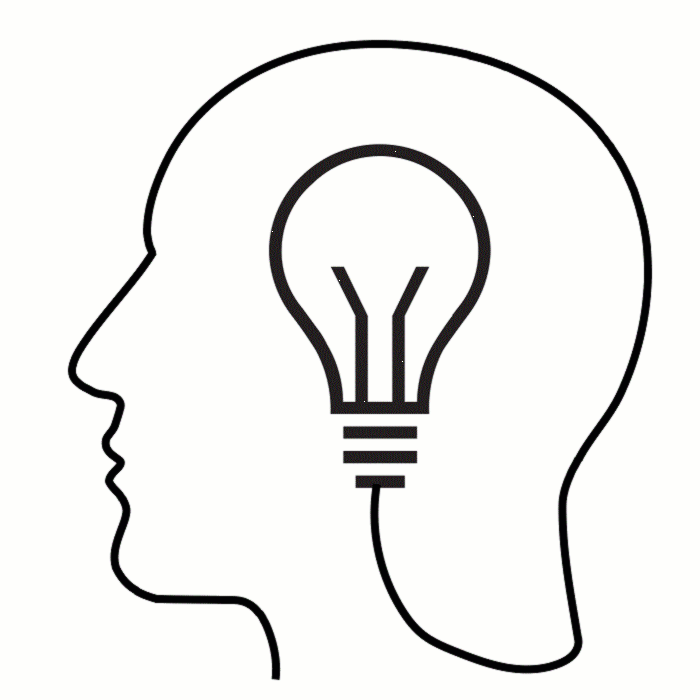

Home
Vergangene Veranstaltung Hannover:
Wirbelphysik Symposium "Synergie"
Zuschrift eines Teilnehmers:
Liebe Ingrid, liebe Gabi,
danke für das wundervolle Wochenende in Hannover.
So komprimiert bekommt man das, was das Leben bieten
kann und wie es tatsächlich wirkt, wahrscheinlich
nicht mehr geboten ... Obwohl, das Leben ist immer
zur Steigerung fähig.
Auch sehr aufschlußreich der Vortrag von Haese Jun.,
wenn die Rechenleistungen so begrenzt sind, kann
sich dieses System nicht mehr lange halten. An uns
Analoge kommen sie eh nicht heran, denkt nur an das
Radio : Analog bin ich zumindest schlecht und in be-
grenzter Reichweite hörbar, Digital muss ich genau-
estens auf der Welle sein, die geringste Abweichung
verhindert den Empfang ! Hinzu kommen die "Natur-
konstanten" - alle unendlich fein aufgegliedert,
für keinen "Binären" oder "Künstlicher Intelligenz"
je erreichbar , geschweige denn lebbar !
Ein sehr beruhigendes und wunderbares Geschenk
dieses Wochenende, ich wünsche mir,
daß möglichst ALLEN diese Erkenntnis zu-THEIL wird.
Herzlich
Euer Matthias
|
15.06.- 16.06.2019 in 30173 Hannover, Yvonne-Georgi-Alle 21 (im „Kubus“)
(WBG Gartenheim)
Dr. Hans Hein war 30 Jahre lang als Allgemeinmediziner niedergelassener Kassenarzt, dann Gründer des Forums Synergie und Entwickler des Synergie-Modells der Tetraedrischen Intelligenzen.
Vorstellung von Dr. Hans Hein: youtu.be/LeZbdBuvhfw (Video 6 Minuten)
Zu seiner Arbeit: www.forumsynergie.de
Dipl.-Phys. Gabi Müller will im interaktiven Gedankenaustausch mit Dr. Hans Hein die Anwendung ihres Wirbelweltbildes in der Praxis darstellen und konkretisieren.
Zu ihren Arbeiten: www.viva-vortex.de
- https://www.perlenschnur.org/videos.htm .
Ingrid Schröder übernimmt an diesem Wochenende wieder die Moderation. (http://www.isis-schule.de)
Vorstellung von Gabi Müller und Ingrid Schröder: perlenschnur.org/ueberUns.htm
Dr. Günter Haese ist Vorstand der WBG Gartenheim in Hannover und ein kreativer Innovator mit Weitblick.
https://www.gartenheim.de
Magnus Haese ist wissenschaftlicher Mitarbeiter am Institut für Hydraulische Strömungsmaschinen und beschäftigte sich mit der numerischen Simulation und Modellierung von kavitationsinduzierter Erosion in turbulenten Strömungen.
Andreas Körber, Mitglied des Vereins Perlenschnur und über sein System „Wortkraftschwingung“ Entwickler von Selbsthilfewerkzeugen, wird uns musikalisch begleiten wortkraftschwingung.net
Unser Gastreferent, Dr. Hans Hein, hat festgestellt, dass die Grundlagen seiner Arbeit als Arzt und Psychotherapeut mit dem Wirbelweltbild von Gabi Müller nun auch praktisch erklärbar sind.
Das Herausarbeiten der Verbindung zwischen mentalen, emotionalen und physischen Prozessen und das globale Zusammenwirken zwischen zwei oder mehr Menschen und zwischen Mensch und Natur ist Thema dieses Wochenendes.
Programm (als Flyer):
Wirbelphysik Symposium "Synergie"
 |
Dr. Hans Hein, Dipl.-Phys. Gabi Müller
und andere
Wirkmechanismen der Verbindung zwischen
Geist, Psyche und Körper
|
==================================
Samstag, 15.06.2019 (Einlass ab 8:15 Uhr)
==================================
9:00 Uhr Video Life Begrüßung durch Dr.Haese und Videovortrag über die „Moosmaschine“
9:30 – 10:30 Uhr Dr. Hans Hein Kurzdarstellung der Begriffe Globalbrain, Meme, Synergie und Tetraeder-Modell der Fallen
11:00 – 12:00 Uhr Dipl.-Phys. Gabi Müller und Ingrid Schröder: Kurzdarstellung Wirbelgeschehen allgemein
12:00 – 13:30 Uhr gemeinsames Mittagessen
13:30 – 14:30 Uhr Dr. Hans Hein und Gabi Müller: Gespräch über die Funktionsweise der Informationsströme von Geist zu Emotionen (Gefühlen) und umgekehrt
15:00 – 16:00 Uhr Dr. Hans Hein und Gabi Müller: Gespräch über die Funktionsweise der Informationsströme von Geist über Emotionen (Gefühle) und feinstoffliches Strömen bis in den physischen Körper (und umgekehrt)
16:30 – 17:00 Uhr Magnus Haese Vortrag über den universitären Stand der Strömungsforschung 17:30 – 18:00 Uhr: Ingrid Schröder: Zusammenfassung des Tagesthemas und Fragerunde
18:00 – 19:30 Uhr gemeinsames Abendessen
19:30 – 21:30 Uhr Diskussionsrunde und freier Gedankenaustausch mit musikalischem Ausklang begleitet von Andreas Körber
==================================
Sonntag, 16.06.2019 (Einlass ab 9 Uhr)
==================================
9:30 – 10:30 Uhr Dr. Hans Hein: Praktische Übungen mit einem Probanden
11:00 – 12:00 Uhr Dr. Hans Hein und Gabi Müller: Herausarbeitung der Funktions- und Wirkungsweise der einzelnen Elemente des in dieser Arbeit ablaufenden Prozesses
12:00 – 13:30 Uhr gemeinsames Mittagessen
13:30 – 14:30 Uhr alle Referenten: freier Gedankenaustausch über die Gesamtthematik
15:00 – 16 Uhr Abschlussrunde mit Rückmeldung aller Teilnehmer und musikalischem Ausklang durch Andreas Körber
Wir beginnen morgens jeweils pünktlich zu den angegebenen Zeiten. Der Rest ist nur grob geplant und kann sich zeitlich aus dem Fluss des Geschehens heraus ändern.
Die Teilnahme an dieser geschlossenen Veranstaltung* des Vereins "Perlenschnur" erfolgt
gegen eine Teilnahmegebühr von 160 EUR pro Person.
Bisherige Gastmitglieder und Gruppen erhalten Rabatte.
*)Die Teilnehmer erhalten mit Anmeldebestätigung eine Gastmitgliedschaft für 4 Monate, diese berechtigt zum Besuch einer Folgeveranstaltung zu einem ermäßigten Preis.
Veranstaltungsort:
Yvonne-Georgi-Alle 21, 30173 Hannover (im „Kubus“)
Anmeldung (ohne Zimmerreservierung) formlos per E-Mail an: office@perlenschnur.org
Die Tagung findet vorbehaltlich des Erreichens der benötigten Mindestteilnehmerzahl statt.
Bei der Anmeldung von Gruppen (mindestens 4 Personen) für das ganze Wochenende gibt es einen Gruppenrabatt. Gastmitglieder (Teilnehmer von Vorveranstaltungen) können ihren Sonder-Rabatt in Anspruch nehmen.
Sozialtarif für Schüler und Studenten ohne Einkommen auf Anfrage.
Verschiedene Rabatte sind nicht miteinander kombinierbar.
Die Finanzen sollten dennoch kein Hinderungsgrund für die Teilnahme an der Veranstaltung sein, möglich sind etwa Ratenzahlung oder späteres Tätigwerden für den Verein.
Die Kosten für Unterkunft und Verpflegung trägt jeder Teilnehmer zusätzlich zum Teilnahmebeitrag selbst
Unterkünfte finden Sie u.a. hier:
www.booking.com
/ www.airbnb.de
/ www.bed-and-breakfast.de
/ bedandbreakfast.de
oder ähnliche Seiten
Für die gemeinsamen Mittagessen und Abendessen werden wir einen Lieferservice organisieren. Teilnehmer können auch eigene Verpflegung und Getränke mitbringen.
Wir freuen uns über Ihr Interesse und ganz besonders auf Ihre Fragen zu den behandelten Themen.
Verein Perlenschnur e.V.
Vorstand: Ingrid Schröder und Dipl.-Phys. Gabi Müller
Sitz: D - 55597 Wöllstein, Ziegelhüttenstr. 14
Telefon Ingrid Schröder 0049 (0) 6703 2965
E-Mail: office@perlenschnur.org
Prinzipieller Hinweis:
Unsere Veranstaltungen zeichnen wir auf Video auf, mit Audioaufzeichnungen.
In den veröffentlichten Videosequenzen achten wir darauf, dass nur die Teilnehmer auch im Bild zu sehen sind, die der Veröffentlichung zugestimmt haben,
allerdings können wir Audiobeiträge der Teilnehmer nicht immer ausblenden.
|
Hier eintragen in den Newsletter von perlenschnur.org und viva-vortex.de
Home
| Termine
| Videos
| Links
| Impressum
| Datenschutz
|